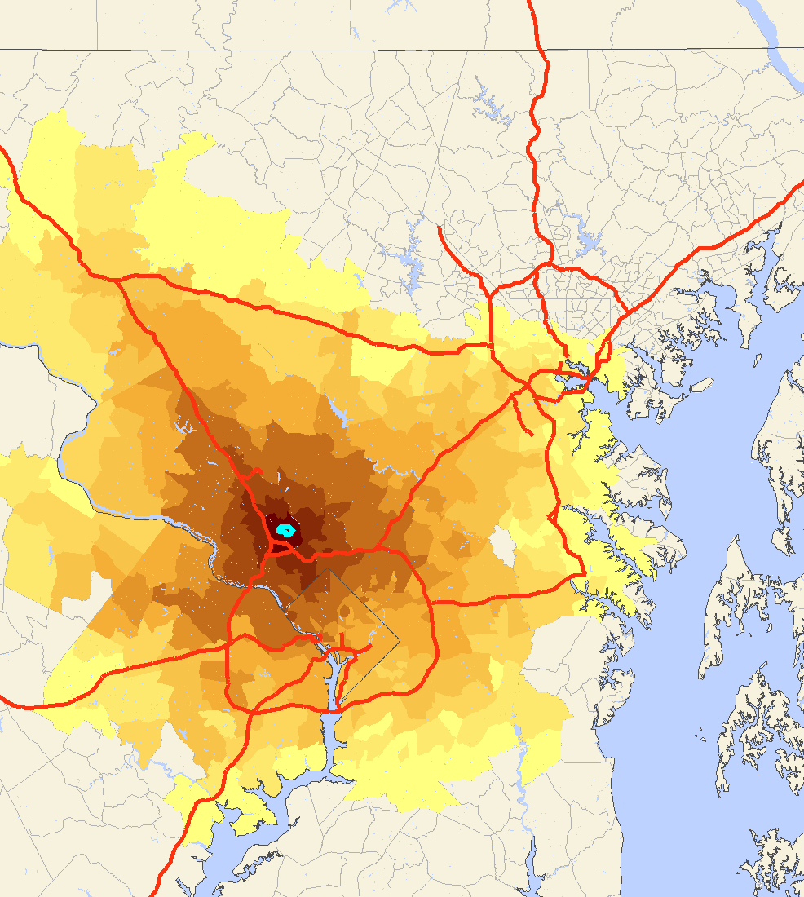
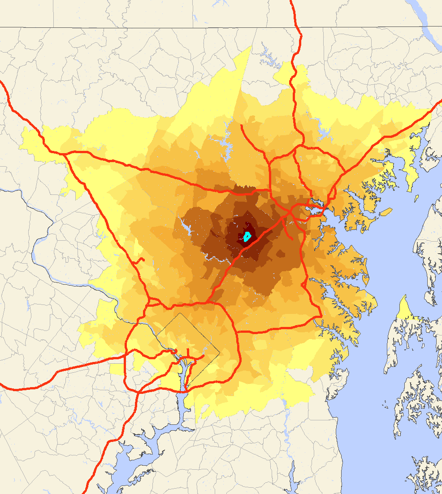
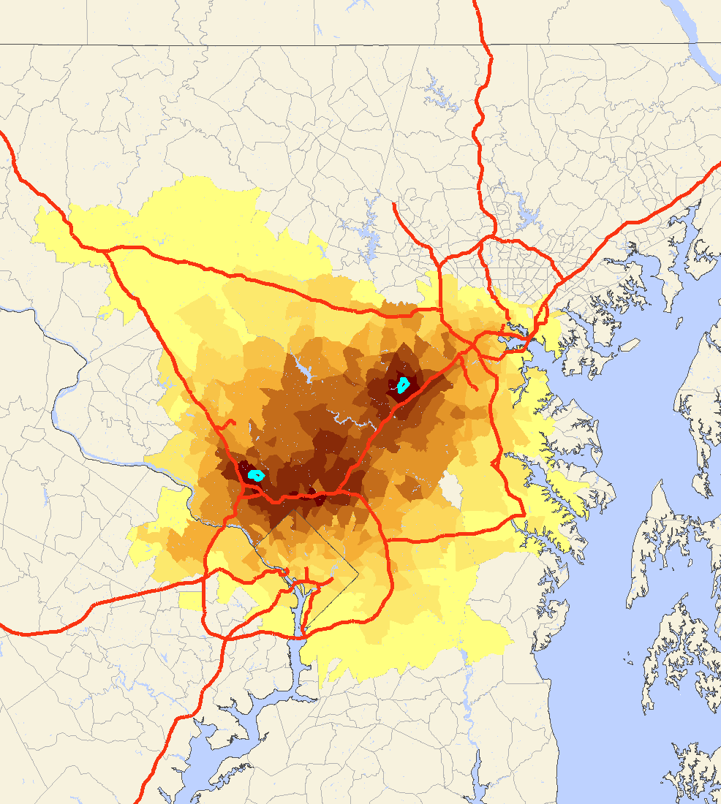

SILO is a state-of-the-art land-use model that is designed as a discrete choice microsimulation model. Discrete choice means that decisions (such as a decision of a household to move to a new dwelling) are modeled explicitly based on utilities at the current dwelling location and expected utilities at alternative dwelling locations. In such a microsimulation model, every household and person is simulated individually. SILO models household relocation, non-spatial demographic changes (such as birth, aging, marriage or having children), developers' decisions to build new residential buildings and change of dwellings over time (including renovation, deterioration and demolition).
SILO is built as a middle-weight tool. It is fully integrated with a travel demand model, and therefore, more complex than sketch-planning tools (such as CommunityViz or UPlan). On the other hand, it is built to function with less rigorous data collection and estimation requirements, making SILO simpler to implement than other popular large-scale land-use models (such as PECAS or UrbanSim).
An important innovation of SILO is to explicitly represent constraints in location choice. The map on the left below shows with a turquoise dot a work location in North Bethesda, MD. A household travel survey reports the average commute distance. Using the trip length frequency distribution of the survey, areas were color-coded to show the probability of this person to live.
  
The map in the center shows the same home location probability for a person working in Columbia, MD. If these two persons life in the same household, their joing area within a reasonable distance to the two work locations is shown in the map on the right. SILO explicitly represents this constraint when searching for a new housing location. Further constraints explicitly represented in SILO are housing costs and total transportation costs of a given location.
SILO is an open-source software and was initially developed with funding by Parsons Brinckerhoff. The prototype application was implemented for the Metropolitan Area of Minneapolis/St. Paul, Minnesota. Currently, an updated version is implemented by the Smart Growth Center for the State of Maryland, funded by the Maryland Department of Transportation.

SILO is designed to be closely integrated with a travel demand model.